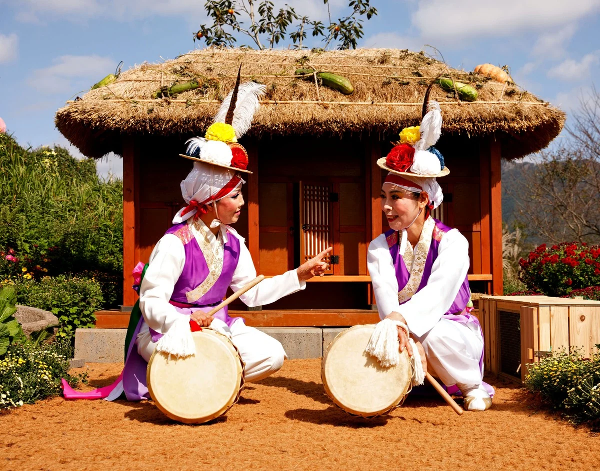

छायाकार का दिया शीर्षक
3D प्रदर्शनी में देखें मूल फ़ाइल डाउनलोड करें

श्रेय कैसे दें
यूमोक (流木) ली दोंग-जू, “आत्मीय बातचीत”, 2019. CC BY 4.0, seungheon.com
चयनित, ह्वासुन राष्ट्रीय छायांकन स्पर्धा, 2019 · 2019
पुरस्कृत कृतियाँ
छायाकार का दिया शीर्षक
3D प्रदर्शनी में देखें मूल फ़ाइल डाउनलोड करें
यूमोक (流木) ली दोंग-जू, “आत्मीय बातचीत”, 2019. CC BY 4.0, seungheon.com